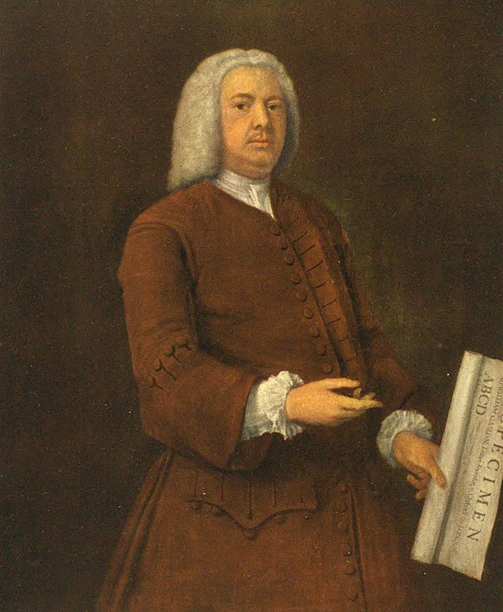
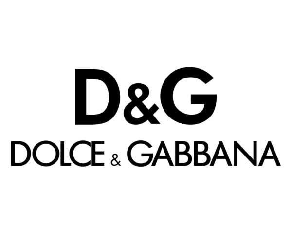
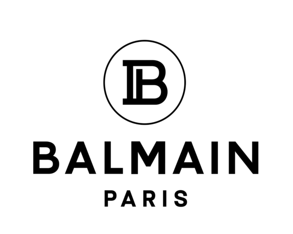
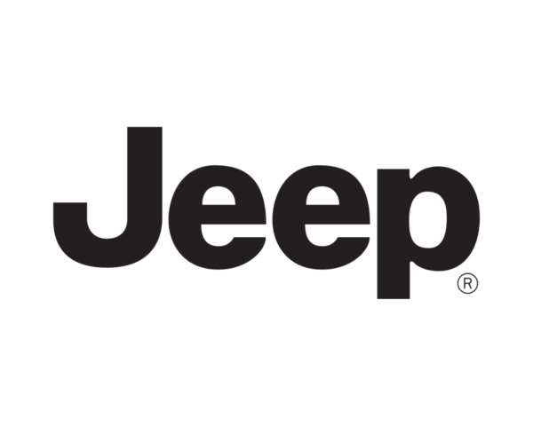

Intro
Kimberley is een technologisch schreefloos lettertype geïnspireerd door industriële bedrijfslogo's uit
de jaren zeventig.
Deze font zal je boodschap overbrengen in een neoterische, machinaal gemaakte esthetiek.
Kimberley is verkrijgbaar in zeven verschillende gewichten en cursief. Verder is er niet veel info te vinden over dit lettertype, maar er is veel te vinden over
de inspiratie van deze lettertype. Namelijk: Sans Serif!
Geschiedenis
In typografie en literatuur is een schreefloos, gotisch of eenvoudigweg schreefloos lettertype een
lettertype dat aan het einde van de streek geen uitbreidbare kenmerken heeft,
genaamd "schreven".
Sans-serif-lettertypen hebben doorgaans minder variatie in lijnbreedte dan serif-lettertypen. Ze worden
vaak gebruikt om eenvoud en moderniteit of minimalisme uit te drukken.
Voor typeclassificatie worden schreefloze ontwerpen gewoonlijk onderverdeeld in deze brede groepen:
grotesk en neo-grotesk, geometrisch en humaninstisch.
Het sans serif font is langzaam begonnen met zijn ontwikkeling in de 18e eeuw, maar werd nog niet breed
gebruikt.
In 1816 heeft William Caslon de 4e een sans serif gecreeerd genaamd: Two Lines English Egyptian, die
aangevraagd werd door een client.
De Figgins foundry in londen heeft in 1830 een nieuwe sans serif gepubliceerd, die voornamelijk gebruikt
werd voor advertenties en kopstukken.
De font was gecondenseerd en vet, wat als resultaat de aandacht trok van iedereen die er naar keek.

"When in doubt, use Caslon" -William Caslon
Tijdens het hoogtepunt van het modernistische tijdperk (20s - 70s), zijn er een van de meest populaire
sans serifs gecreeerd namelijk:
Futura, een geometrische sans, Helvetica en Univers een neo-grotesque sans; en als laatst Frutiger, een
humanist sans.
Moderne omgeving
Clean en krachtig. Van de belangrijkste lettertypes is de sans serif lettertype het meest gebruikt en
het meest veelzijdig.
In de digitale wereld is sans serif lettertypes het favoriete lettertype van duizenden merken
wereldwijd, dankzij hun helderheid, leesbaarheid en eenvoud.



Moderne merken hebben tegenwoordig minder tijd dan ooit om contact te maken met hun publiek en proberen
daarom hun boodschappen zo aantrekkelijk, toegankelijk en opvallend mogelijk te maken.
Met een overvloed aan marketingboodschappen zoeken en krijgen mensen naar wat ze interessant vinden en
negeren ze merken tenzij ze persoonlijk betrokken zijn bij de boodschap.
Karakters
Aa
Bb
Cc
Dd
Ee
Ff
Gg
Hh
Ii
Jj
Kk
Ll
Mc
Nn
Oo
Pp
Qq
Rr
Ss
Tt
Uu
Vv
Ww
Xx
Yy
Zz
0
1
2
3
4
5
6
7
8
9